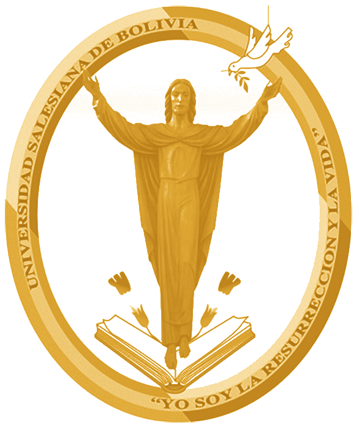
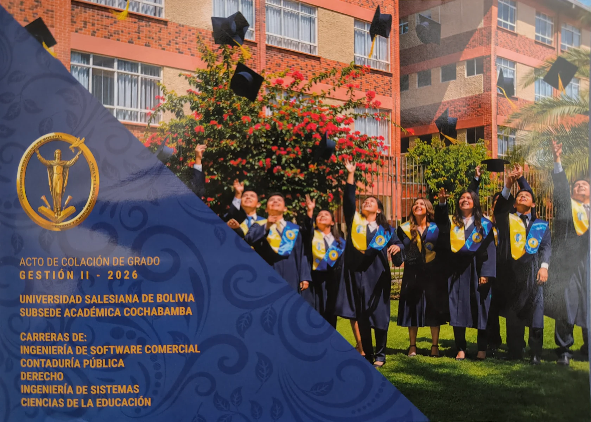

UniversidadSalesiana de Bolivia
SUBSEDE ACADÉMICA COCHABAMBA

COLACIÓN
DE GRADO
GESTIÓN
II-2026Colación de Grado II-2026
SUBSEDE ACADÉMICA COCHABAMBA

GESTIÓN
II-2026
GESTIÓN II - 2026
UNIVERSIDAD SALESIANA DE BOLIVIA
SUBSEDE ACADÉMICA COCHABAMBA
El Rector de la Universidad Salesiana de Bolivia, el Coordinador a.i. de la Subsede Académica Cochabamba, Personal Administrativo, Docente y los Graduados de las Carreras:
Tienen el agrado de invitarles al acto de:
Que se realizará el día Jueves 12 de noviembre del presente año a horas 18:30 p.m. en el Salón de Eventos “Notre Dame”.
Agradecemos su gentil concurrencia.
Cochabamba, Noviembre 2026
Somos una institución de inspiración humana, cristiana e índole salesiana, dedicada a la generación, desarrollo y difusión del conocimiento, que aporta al progreso de la sociedad con profesionales competentes,
buenos cristianos y honrados ciudadanos.
Ser una universidad referente en la formación académica de excelencia, la investigación, la interacción social y difusión cultural, reconocida por sus profesionales competentes, emprendedores y comprometidos con el bienestar colectivo.
Hoy culmina una etapa muy importante
en mi vida, y quiero expresar mi más sincero
agradecimiento a Dios, a mi familia, a mis
docentes y a todas las personas que me
acompañaron durante este camino.
Gracias por su apoyo, paciencia, consejos
y confianza, porque cada palabra de aliento
y cada esfuerzo compartido hicieron
posible este logro.
Usa las flechas o desliza para pasar de página.